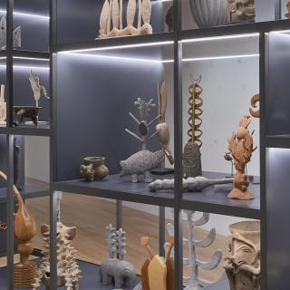

2 Sur 708, Centro, Puebla, Pue., México 72000
2 Sur 708, Centro, Puebla, Pue., México 72000 52 (222) 229 3850
52 (222) 229 3850


Exposiciones
El Museo Amparo genera y ofrece un programa permanente de exposiciones temporales nacionales e internacionales, abordando diversas temáticas y exhibiendo los múltiples lenguajes del arte contemporáneo. Las exposiciones se han acercado a diferentes materias y medios: arqueología, historia, arte contemporáneo, arquitectura y diseño, dando cabida a propuestas curatoriales de investigadores que encuadran miradas innovadoras al arte y a las manifestaciones culturales.

El tiempo en las cosas: Sala de Arte Contemporaneo
Del 28 de febrero, 2021 al 31 de diciembre, 2022